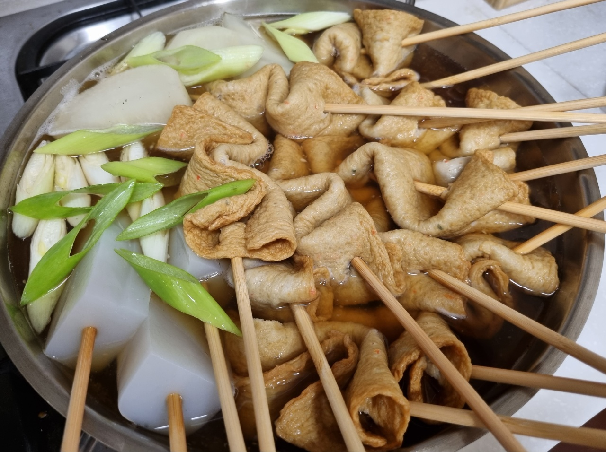

어묵탕

- 재료
사각어묵 6장, 곤약, 꼬지, 대파 1개, 무 1토막, 다시마 2장, 멸치 한 줌, 물 1.5L, 국간장 2T,
다진마늘 1/2T, 청양고추 2개, 후추 톡톡
- 조리순서
- 냄비에 물 1.5L를 넣고 무 1토막, 다시마 2장, 멸치 한 줌을 넣어서 센 불에 육수를 끓입니다.
육수가 끓으면 다시마와 멸치를 빼고 중불로 낮춰서 무가 익기를 기다립니다.
- 그 동안 사각어묵을 긴 방향으로 반을 자르고, 물결 모양으로 꼬지에 끼웁니다.
곤약도 적당한 크기로 길게 잘라 꼬지에 끼웁니다. 가래떡을 넣어도 좋습니다.
꼬지에 끼운 어묵과 곤약을 체에 받쳐서 뜨거운 물에 살짝 데치면 더 깔끔합니다.
- 무가 익으면 다진마늘 1/2T, 국간장 2T를 넣고 어묵과 곤약 꼬지를 넣어줍니다.
- 대파를 쫑쫑 썰고 청양고추 2개는 반으로 썰어서 넣습니다.
후추 톡톡 뿌리면 어묵탕 완성!